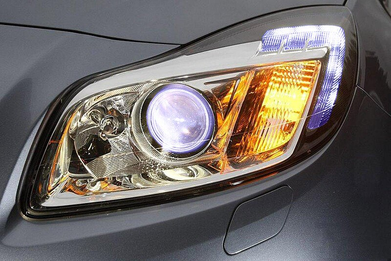
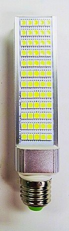
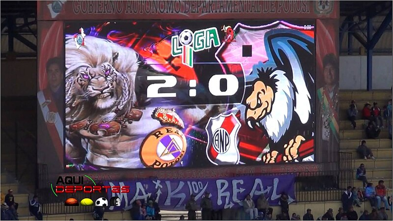
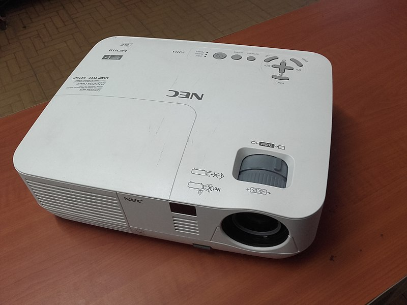
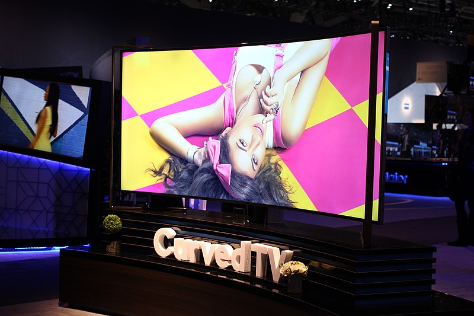

Los LED SMD son actualmente el tipo de LED más usado en el mercado. La producción a gran escala de grandes fabricantes a reducido su precio notablemente. Su desarrollo e innovación continua en la parte lumínica de los cristales semiconductores ofreciendo año tras año LED SMD más luminosos, pero con menor consumo.





Gracias a ello estos LED son ampliamente usados en sistemas de iluminación doméstica e industrial, iluminación en vehículos, así como en dispositivos electrónicos de todo tipo como pantallas de LED, televisores, proyectores. Los LED SMD que combinan el sistema RGB es usado para iluminación decorativa y pantallas gigantes de imagen full color.